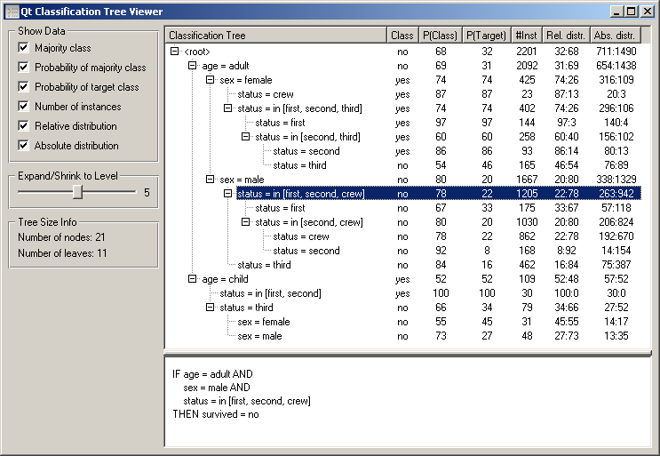
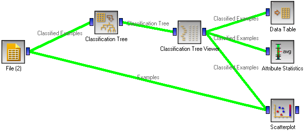
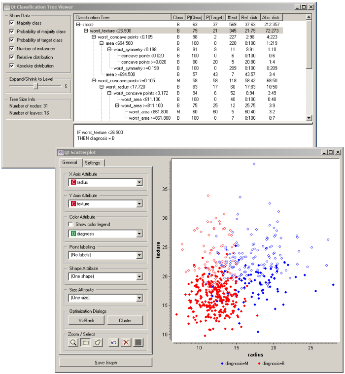

This is documentation for Orange 2.7. For the latest documentation, see Orange 3.
Classification Tree Viewer¶

A hierarchical browser for classification trees
Signals¶
Inputs:
- Classification Tree (orange.TreeClassifier)
A classification tree
Outputs:
- Examples (orange.ExampleTable)
Examples from the selected tree node.
Signal Classified Examples sends data only if some tree node is selected and contains some examples.
Description¶
The widget shows the tree as a hierarchy in a textual form. Although less fancy than the graphical viewer, much more information fits in a Tree Viewer’s window than in the graphical viewer’s one.
The widget’s options allow choosing the columns to be displayed, setting the general depth of the display (individual nodes can, of course, be opened and closed manually).
On the right hand side there is the tree, where it is possible to select a single node. The rule describing the particular node is shown at the bottom, and the training examples belonging to the node are put on the output.
Examples¶
The obvious use for the widget browsing the induced tree. Orange Canvas, however, offers something more exciting: the widget can be used for exploring the examples belonging to a certain node through using any other widget. If you are a beginner: this widget’s output behaves exactly like the output of the file widget, with the exception that instead of reading the examples from a file, it gets them from the tree.
In the above example we constructed a tree from the Wisconsin breast cancer data. We explore the tree nodes by feeding the examples in the Data Table, by checking the attribute value distributions for each node and seeing where the examples lie in the Scatter plot. To make the latter more informative, the Scatter plot shows the entire data set (examples from the File Widget), but marking - by plotting solid symbols instead of hollow ones - the examples belonging to the particular tree node, as shown in the snapshot below.
